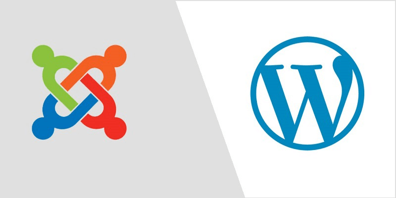

Rome wasn't built in a day and neither is becoming an incredible website designer. Here are some of the beginner level steps on installing a PHP-based web application!
First you must understand what a PHP is for those of you that do not know:
PHP is a common script language that helps aid in the process of website creation. It originially meant personal home page, but now it means hypertext preprocesser. There are two very common and easy to use PHP platforms that most people use, Wordpress and Joomla. Wordpress is the most popular PHP platform today for its easy usability and customization options! Joomla used to be more prominent and popular than Wordpress but over the years it has fell behind partly due to its bland customization options. Both are very simple in the whole aspect that you DON'T have to code as compared to if you were creating a website using Bootstrap!

Picture of Joomla (left) and Wordpress (right), image courtesy of JoomIArtWork.
Here is a video to walk you through the installation process for WordPress! There will be a step by step description below in order to add you through the process!
Courtesy of Create a Pro Website
Getting started with WordPress:
The easiest wasy to download WordPress is by doing so through a hosting platform like Amazon Lightsail, DreamHost or Bluehost since the function can be built right into site.
However, people may prefer to download the PHP service themselves. Click Here to jump over to the page to allow you to download WordPress to your computer!
We mentioned hosting platforms in an earlier step, you will need one of those web providers in order to publish your website for everyone to see someday!
In class, we utilized Amazon Lightsail as our web provider and used the Linux PHP portion in order to use Amazon Lightsail to get your IP address so it will connect Cyberduck and Lightsail together for your website to work.
Once you download WordPress, you will have to confirm that it is installed to your computer.
You would want to make sure that you set up your account properly for Wordpress that way it would be able to work with your Lightsail account and your File Transfer Protocol unit-we used Cyberduck.
You would want to connect your IP address in Cyberduck in order to connect it and WordPress.
You're set to start working in WordPress once everything is connected and after you log into the site!
Please refer back to the video if you feel completely lost or do better learning visually!
Here is a video to walk you through the installation process for Joomla! There will be a step by step description below in order to add you through the process!
Courtesy of CodeWithViju
Getting started with Joomla:
Joomla should be a little bit easier to install as compared to WordPress if you're doing so manually.
The easiest wasy to use Joomla is by doing so through a hosting platform built right into site so you don't have to do all of these extra steps.
Like other PHP we talked about, people may prefer to download Joomla on their own. Click Here to jump over to the page to allow you to download Joomla to your computer!
We mentioned hosting platforms a lot so far, you will of course need one in order to install Joomla too.
We're using Amazon Lightsail and the Linux PHP function in order to make sure our website will get hosted properly once again.
You would want to make sure you set up a new server through Lightsail in order for your website to function properly, don't worry... you will have the same IP address as you did when you created your WordPress site.
Once you download Joomla, you will have to also confirm that it has installed to your computer.
You will also have to make sure that you have good old Cyberduck or another FTP all ready to go to connect the your Lightsail and Joomla.
Make sure that you properly connect Cyberduck and Joomla in order to get your website to work by using the IP address once again.
You are all ready to start using Joomla once everything is set up properly!
Once again, please refer back to the video if you feel completely lost or do better learning visually!